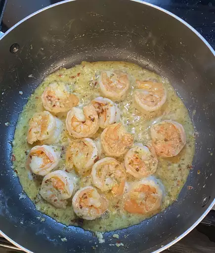

Simple Garlic Shrimp
 Pan filled with shrimp in a butter garlic sauce.
Description
Give this garlic shrimp recipe a try if you like shrimp and love garlic. It's fast and delicious, and I hope you enjoy it!
Ingriedients
- 1 ½ tablespoons olive oil
- 1 pound shrimp, peeled and deveined
- Salt to taste
- 6 cloves garlic, finely minced
- ¼ teaspoon red pepper flakes
- 3 tablespoons lemon juice
- 1 tablespoon caper brine
- 2 tablespoons cold butter, cut into 4 equal pieces, divided
- ⅓ cup chopped flat-leaf parsley, divided
- 1 teaspoon water, or as needed
Directions
Step 1
- Heat olive oil in a heavy skillet over high heat until it just begins to smoke. Place shrimp in an even layer on the bottom of the pan and cook for 1 minute without stirring.
Step 2
- Season shrimp with salt; cook and stir until shrimp begin to turn pink, about 1 minute.
Step 3
- Add garlic and red pepper flakes; cook and stir for 1 minute.
Step 4
- Stir in lemon juice, caper brine, 1 piece of butter, and 1/2 of the parsley; cook until butter has melted, about 1 minute
Step 5
- Reduce heat to low and stir in remaining 3 pieces butter. Cook and stir until butter has melted, sauce is thick, and shrimp are pink and opaque, 2 to 3 minutes.
Step 6
- Remove shrimp with a slotted spoon and transfer to a bowl; continue to cook butter sauce, adding water, 1 teaspoon at a time, if too thick, about 2 minutes. Season with salt to taste; serve shrimp topped with the pan sauce and remaining parsley.